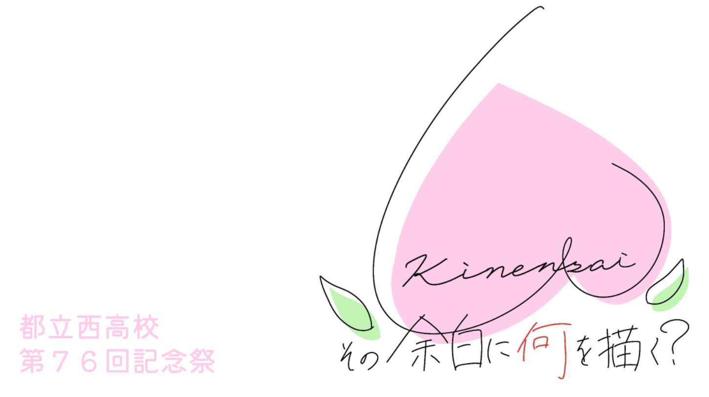

記念祭テーマ
その余白に何を描く？
西高が誇る圧倒的な『自由』、それを『余白』という言葉で表現した。
記念祭はそれぞれが好きなように自己表現をできる場所。
普段ｼｭﾝﾉｶｶﾞｸなどで詰め詰めな毎日だけど、記念祭は何をやっても良い。
それが“余白”というシンプルで飾らない言葉で、
だからこそどんな人にもストレートに伝わってくると思う。
何を描いても、書き留めても、白紙でもなんでもいい。
教科書の隅っこを彩るような自然体で、
西春のキャンバスを描け。
記念祭はそれぞれが好きなように自己表現をできる場所。
普段ｼｭﾝﾉｶｶﾞｸなどで詰め詰めな毎日だけど、記念祭は何をやっても良い。
それが“余白”というシンプルで飾らない言葉で、
だからこそどんな人にもストレートに伝わってくると思う。
何を描いても、書き留めても、白紙でもなんでもいい。
教科書の隅っこを彩るような自然体で、
西春のキャンバスを描け。
文・76期記念祭実行委員